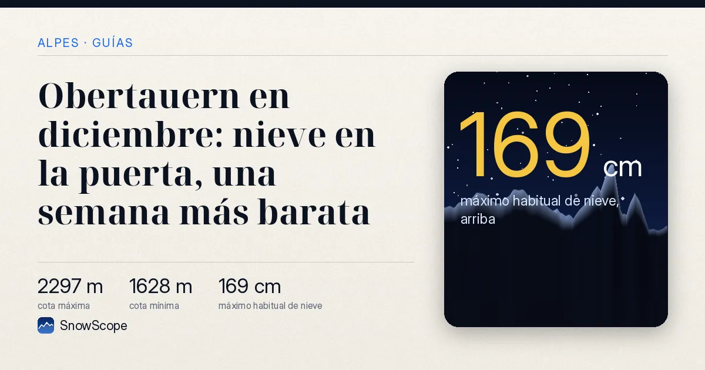

Obertauern en diciembre: nieve en la puerta, una semana más barata
El remonte más bajo de Obertauern sale a 1628 m, así que todo el pueblo está donde la nieve de diciembre suele quedarse. En nuestros 46 inviernos de histórico, la media montaña tenía 30 cm o más la semana del 15 al 21 de diciembre en el 80 % de los inviernos, y el forfait de 6 días cuesta 331 EUR hasta el 25 de diciembre en lugar de 368 EUR.
Consulta la previsión de nieve en tiempo real de Obertauern en la app SnowScopeEspesor de nieve, alertas de nieve polvo y mapa 3D, gratis.
El veredicto, corto
Si buscas una semana barata en Austria en diciembre sin pagar un glaciar, Obertauern es la primera opción. La estación va de 1628 m a 2297 m, con 87 km de pistas cartografiadas y 28 remontes, y ninguna pista de fondo de valle que dependa de la suerte.
La pega es sencilla: principios de diciembre aún no es seguro. En la primera semana del mes solo algo más de la mitad de nuestros inviernos (57 %) tenía 30 cm a media montaña. Reserva la segunda mitad del mes y las probabilidades mejoran mucho.


Diciembre, semana a semana
A media montaña (1962 m) la parte de inviernos con 30 cm o más sube durante el mes: 57 % del 1 al 7 de diciembre, 65 % del 8 al 14, 80 % del 15 al 21 y 85 % en la semana de Navidad. En la cima (2297 m), las mismas semanas dan 76, 80, 85 y 91 %.
El espesor típico a media montaña pasa de 34 cm el 1 de diciembre a 43 cm el 15 y 62 cm el 31. En un año flojo (1 invierno de cada 10) el 15 de diciembre solo hay 17 cm; en uno bueno, 86 cm. En ninguno de nuestros 46 inviernos el pueblo estaba sin nieve el 15 de diciembre.
Un aviso a largo plazo: la media de diciembre a media montaña ha bajado de 46 cm en los primeros 15 inviernos a 38 cm en los últimos 15, y el invierno pasado solo había 18 cm el 15 de diciembre.
Lo que cuesta el forfait
La tarifa oficial 2026-27 de Obertauern tiene dos temporadas. El forfait de un día cuesta 72 EUR en ambas. El ahorro está en los de varios días: 6 días cuestan 331 EUR en la temporada B, del 20 de noviembre al 25 de diciembre, frente a 368 EUR en temporada alta.
Una semana que acaba antes de Navidad paga el forfait al precio más bajo de la temporada B, con los mismos remontes y, casi todos los inviernos, nieve suficiente.
Frente al Kitzsteinhorn
El Kitzsteinhorn, sobre Kaprun, es la respuesta clásica en diciembre: un glaciar con 137 cm en la cima un 15 de diciembre típico. Pero su remonte más bajo está a 765 m, donde un 15 de diciembre típico tiene 6 cm, y su media montaña (1894 m) se parece a la de Obertauern: 40 cm y 76 % de inviernos con 30 cm la semana del 15 al 21 de diciembre.
En dinero no hay duda: 6 días en el Kitzsteinhorn cuestan 396 EUR en temporada temprana y 440 EUR en temporada alta. La semana antes de Navidad en Obertauern sale más barata, y sales esquiando desde el hotel.
Para quién es
Para familias y esquiadores intermedios que quieren esquiar desde la puerta en diciembre y gastar menos. Quien busque nieve profunda, que espere a la semana de Navidad, cuando el 41 % de nuestros inviernos tenía 60 cm o más a media montaña, o que suba más.
Consejos para esquiadores
- Elige del 15 al 21 de diciembre o después: la probabilidad de 30 cm a media montaña sube del 57 % al 80 % respecto a la primera semana.
- Haz que el forfait de 6 días termine el 25 de diciembre como tarde para quedarte en la temporada B (331 EUR en vez de 368 EUR).
- Mira el mapa de nieve una semana antes de salir: el invierno pasado demuestra que todavía hay diciembres flojos.
- Fuera de pista tras una nevada: lee cada mañana el boletín de aludes de Salzburgo.
Más mapas (sitios externos)
Referencias y créditos
- Obertauern: official lift-pass prices (2026-27), checked 13 November 2026 www.ski-obertauern.at/en/ski-pass/ski-pass-prices
- Kitzsteinhorn (Kaprun): official lift-pass prices (2026-27), checked 13 November 2026 www.kitzsteinhorn.at/en/tickets-prices/ski-board
Sobre estas cifras
Cifras de nieve: histórico de nieve de SnowScope, 46 inviernos pasados (1980-81 a 2025-26) a las alturas de la estación, corregido por altitud (una estimación para una zona, no partes de la estación); «buena nieve» = 30 cm o más en el suelo de media en la semana. Mapa: nuestro espesor habitual el 15 de diciembre repartido sobre el relieve según la altura. Pistas y remontes: cartografía OpenSkiMap. Forfaits: tarifas oficiales de las estaciones, comprobadas el 13 de noviembre de 2026; los precios pueden cambiar.
Boletines oficiales de aludes: Lawinenwarndienst Salzburg
Citar este informe
Para investigación, docencia o prensa: cifras y gráficos reutilizables libremente bajo CC BY 4.0 con esta cita.
SnowScope (2026), Obertauern en diciembre: nieve en la puerta, una semana más barata, https://snowscope.app/blog/es/2026/11/obertauern-december-skiing-cheap-snow-sure-pre-christmas.html, consultado el 2026-11-14
SnowScope (Atlas Labs). (2026, November 14). Obertauern en diciembre: nieve en la puerta, una semana más barata. SnowScope snow reports. https://snowscope.app/blog/es/2026/11/obertauern-december-skiing-cheap-snow-sure-pre-christmas.html
BibTeX
@misc{snowscope2026obertauerndecemberskiing,
author = {{SnowScope (Atlas Labs)}},
title = {Obertauern en diciembre: nieve en la puerta, una semana más barata},
year = {2026},
month = nov,
howpublished = {\url{https://snowscope.app/blog/es/2026/11/obertauern-december-skiing-cheap-snow-sure-pre-christmas.html}},
note = {Published 2026-11-14 13:29 UTC; accessed 2026-11-14}
}· CC BY 4.0 · Métodos, datos y herramientas →
Obertauern: nieve y temperatura según la altura, este invierno vs el pasado (herramientas) →
Sigue Obertauern
Gratis: un aviso cuando llega la nieve y la previsión cada mañana.